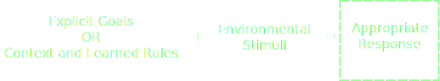
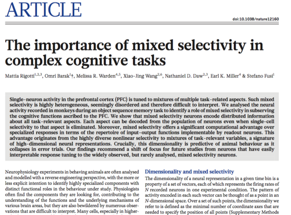
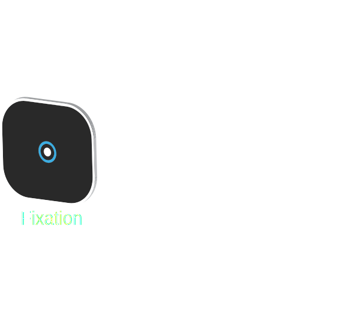
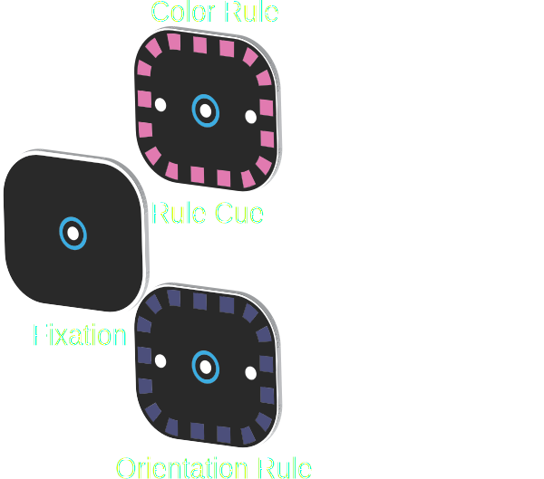

“Each of the objects and events we encounter in the environment affords a range of possible actions in response to it. The appropriate response varies as a function of the task”
Rule / Task Set

Cognitive Demand: The monitoring and allocation of control
Adjustments in control can occur rapidly. Reaction time and accuracy tend to change:
After errors
Repeating the same task
When switching between tasks
When responding to stimuli with more than response associated with them
Prefrontal Cortex is important for monitoring and allocation of control
Perseverative behavior after injury
Neurons that respond selectivity to one rule
Dynamics: How is activity on network level in PFC coordinated so that the appropriate response is selected?
PFC neurons need to be able flexibly represent and switch between rules to bias other areas toward the appropriate sensory-motor representations.
They need to suppress inappropriate sensory-motor representations.
Functional Organization of the Prefrontal Cortex
The problem of the ACC — No consensus
Selection for action?
Error Detection?
Conflict Monitoring?
Reinforcement Learning?
Error Likelihood?
Predicted Response-Outcome?
Hierarchical Error Representation?

Outline
Task Switching Paradigm
Aim #1: LFP Dynamics
Aim #2: Single Neuron and Population Analysis
NEW Aim #3: Interactive visualization tools for multi-dimensional investigation of electrophyisological datasets
Task Switching Paradigm

Task Switching Paradigm

Task Switching Paradigm
Task Switching Paradigm
Factors that Affect the Amount of Attention Needed (Reaction Time)
Factors that Affect the Amount of Attention Needed (Reaction Time)
Factors that Affect the Amount of Attention Needed (Reaction Time)
All Factors that Affect Behavior (Reaction Time)
Aim #1
Rule-dependent networks in dlPFC
Rule-dependent networks in dlPFC
Rule-dependent networks in dlPFC
Rule-dependent networks in dlPFC
Rule-dependent networks in dlPFC
Analysis of ACC and dlPFC-ACC Synchrony üëé
Representative sample of dlPFC-ACC differences in rule coherence
Analysis of ACC and dlPFC-ACC Synchrony üëé
Representative sample of ACC-ACC differences in rule coherence
Analysis of ACC and dlPFC-ACC Synchrony üëé
There was no evidence of modulation by attentional factors either
Aim #2
Demonstration that models work
SFN Poster Analysis
SFN Poster Problems
Many low firing rate neurons (75% of neurons < 10 Hz)
Approach too data-mining centric
Not enough analysis of effect size
Smoothing over time with splines inconsistent
Solution: Regularization
Proposed Corrections at Qualifying Exam
Fit one big model and examine effects
Use regularization as a soft-threshold to constrain the fitting space
Problem: Interpretability
Current Status: Constrained set of models
Previous Error + Response Direction
Previous Error + Response Direction + Rule Repetition
Previous Error + Response Direction + Congruency
Previous Error + Response Direction + Rule Repetition + Rule
Previous Error + Response Direction + Congruency + Rule